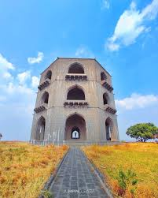
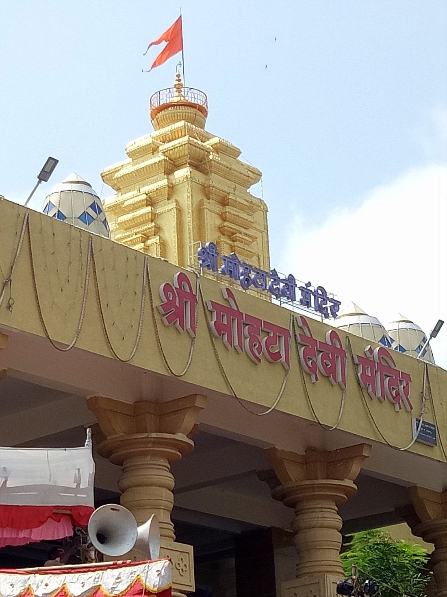
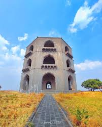
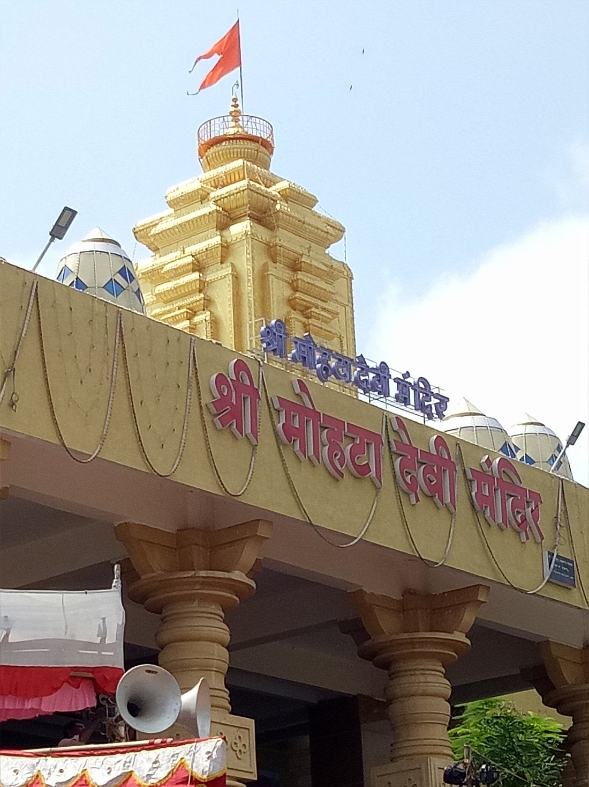
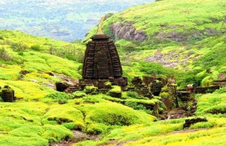
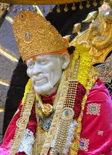
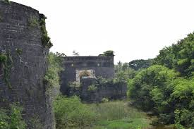

|

Chandbibi Mahal |

Mohatadevi Temple |

Devgad Temple was once occupied by a small lake |
|

Chandbibi Mahal |

Mohatadevi Temple |
Devgad Temple was once occupied by a small lake |
|

Harishchandr Fort great seat of the the Maratha Empire until |

Saibaba Temple The temple is known for indias greatest temple |

Bhuikot Fort traditional warrior maratha |